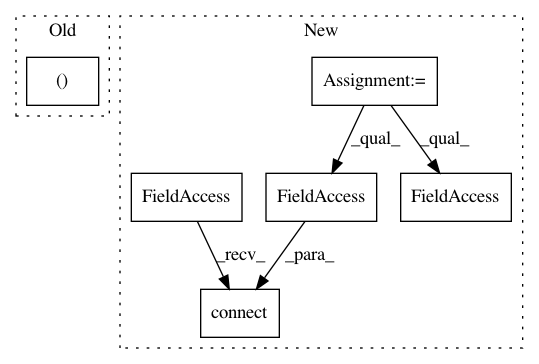

8abd60f8729412d1c06de65ab9eb90c701cf0a42,lazyflow/operators/classifierOperators.py,OpTrainRandomForestBlocked,__init__,#OpTrainRandomForestBlocked#,111
Before Change
self._forest_count = 10
// TODO: Make treecount configurable via an InputSlot
self._tree_count = 10
self._forests = (None,) * self._forest_count
def setupOutputs(self):
self.outputs["Classifier"].meta.dtype = object
After Change
// TODO: Merge progress from sub-operators into our own signal...
self.progressSignal = OrderedSignal()
self._opFeatureMatrixCaches = OperatorWrapper( OpFeatureMatrixCache, parent=self )
self._opFeatureMatrixCaches.LabelImage.connect( self.Labels )
self._opFeatureMatrixCaches.FeatureImage.connect( self.Images )
self._opFeatureMatrixCaches.NonZeroLabelBlocks.connect( self.nonzeroLabelBlocks )
self._opConcatenateFeatureMatrices = OpConcatenateFeatureMatrices( parent=self )
self._opConcatenateFeatureMatrices.FeatureMatrices.connect( self._opFeatureMatrixCaches.LabelAndFeatureMatrix )
self._opTrainFromFeatures = OpTrainRandomForestFromFeatures( parent=self )
self._opTrainFromFeatures.LabelAndFeatureMatrix.connect( self._opConcatenateFeatureMatrices.ConcatenatedOutput )
self._opTrainFromFeatures.MaxLabel.connect( self.MaxLabel )
In pattern: SUPERPATTERN
Frequency: 3
Non-data size: 6
Instances
Project Name: ilastik/ilastik
Commit Name: 8abd60f8729412d1c06de65ab9eb90c701cf0a42
Time: 2014-02-28
Author: bergs@janelia.hhmi.org
File Name: lazyflow/operators/classifierOperators.py
Class Name: OpTrainRandomForestBlocked
Method Name: __init__
Project Name: ilastik/ilastik
Commit Name: 7b8507f5382e73ab7f0f88f88b0292c6007f5fab
Time: 2013-03-01
Author: bergs@janelia.hhmi.org
File Name: workflows/blockwiseObjectClassification/blockwiseObjectClassificationWorkflow.py
Class Name: BlockwiseObjectClassificationWorkflow
Method Name: _initBatchWorkflow
Project Name: ilastik/ilastik
Commit Name: 9418883d418ecccd7fe5da4dddffdc01064efb23
Time: 2014-03-26
Author: bergs@janelia.hhmi.org
File Name: ilastik/workflows/carving/splitBodyCarvingWorkflow.py
Class Name: SplitBodyCarvingWorkflow
Method Name: __init__